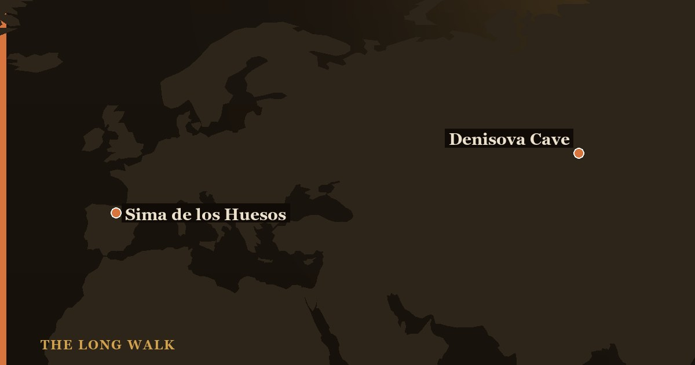

Sima de los Huesos, in northern Spain, holds the remains of at least 28 early Neanderthals from 430,000 years ago—the largest Middle Pleistocene human collection ever found. Denisova Cave in Siberia, occupied by both Neanderthals and Denisovans, revealed an unknown human lineage through a single finger bone and produced "Denny," a hybrid daughter of two species. Both sites showcase how ancient DNA solved mysteries that bones alone could not answer.

For most of human prehistory, archaeologists could only study the bones themselves—measure skulls, count teeth, compare stone tools. But in the early 2000s, advances in ancient DNA technology opened a new window into the lives and relationships of archaic humans. Two caves, separated by thousands of kilometers, became the stars of this revolution: Sima de los Huesos in Spain and Denisova Cave in Siberia each answered fundamental questions about who our ancestors were and how the human family tree was woven.
These two sites tell very different stories—one about deep history and the birth of a lineage, the other about the discovery of a people we never knew existed. Yet both transformed paleoanthropology by showing that bones and DNA together reveal truths neither could alone.
| At a glance | Sima de los Huesos (Spain) | Denisova Cave (Siberia) |
|---|---|---|
| Location | Atapuerca Mountains, northern Spain | Altai Mountains, southern Siberia, Russia |
| Age | Approximately 430,000 years old | 130,000–50,000 years ago (multiple occupations) |
| Who lived there | Early Neanderthals (Homo heidelbergensis) | Neanderthals and Denisovans, both populations |
| Key finds | At least 28 individuals; Skull 5 ("Miguelon"); symbolic handaxe ("Excalibur") | Finger bone (Denisova 3); molars; "Denny" (Denisova 11) hybrid; sediment DNA |
| DNA breakthrough | First complete nuclear genome of early Neanderthals (Meyer et al. 2016) | Discovery of Denisovans as a new human lineage; first-generation hybrid individual (2018) |
| What it meant | Placed a growing Neanderthal family tree 430,000 years back in time | Revealed an entirely unknown human species; proved interbreeding across species lines |
Sima de los Huesos: The Pit of Bones
Descending into Spain's Sima de los Huesos—literally "Pit of Bones"—is like walking back in time to a Neanderthal ossuary. At the bottom of a vertical shaft 13 meters deep lies one of the most extraordinary collections of hominin remains ever discovered: the skeletal remains of at least 28 individuals, nearly all of them early Neanderthals living around 430,000 years ago. This concentration of bones in a single location is unmatched anywhere else in the Middle Pleistocene archaeological record.
The site tells a poignant story. Why did so many bodies end up in a deep pit? Some researchers argue the shaft served as a natural trap where injured or sick individuals sought shelter and died. Others see something more deliberate: the placement of bodies, the arrival of a beautiful handaxe (the famous "Excalibur") seemingly as an offering, and the orderly arrangement suggest early mortuary behavior—the possibility that these Neanderthals cared for their dead with intention and ritual. The most famous find, Skull 5, given the affectionate name "Miguelon," is so complete it rivals any skull from much later in the Neanderthal record.
What made Sima truly significant was the DNA breakthrough: in 2016, Meyer and colleagues published the nuclear genome of a Sima individual, confirming beyond doubt that these Spanish cave dwellers sat directly on the Neanderthal evolutionary lineage. This was not a transitional form or a side branch—these were Neanderthals, ancestral to all later members of the species.
Denisova Cave: Home of a Ghost Lineage
High in the Altai Mountains of southern Siberia lies Denisova Cave, a site that reveals a fundamentally different story. This was not a mass grave but a living place—a shelter occupied at different times by multiple human species, leaving behind scattered bones, teeth, and an extraordinary concentration of mitochondrial DNA embedded in cave sediment. The cave walls tell a narrative of coexistence and movement through time.
In 2010, analysis of a single finger bone (Denisova 3) changed everything. The DNA showed that this bone belonged to a previously unknown human lineage, distinct from both Neanderthals and modern humans. The Denisovans, as they came to be called, were revealed not through skulls or tools, but through the invisible signature of their genome. We know Denisovans primarily from DNA traces—their actual fossils are extremely rare. Yet from that slender evidence came knowledge that this was a full human species with its own migrations, adaptations, and interactions.
The most dramatic discovery came in 2018, with an individual called "Denny" (Denisova 11). This was a young girl, not yet a teenager, with a Neanderthal mother and a Denisovan father—a first-generation hybrid, direct proof that two archaic human species not only met but interbred and produced viable offspring. Her DNA showed she lived roughly 90,000 years ago and likely had dark skin and brown hair. Denny is a testament to encounters between populations, to shared caves, and to a world far more interconnected than we once imagined.
What Ancient DNA Revealed
Before the DNA era, both sites would have been interpreted as stone-age deposits with interesting bones. Sima de los Huesos might have been catalogued as "early humans of uncertain relationship," and Denisova's scattered remains might have seemed too fragmentary to mean much. DNA changed everything.
The nuclear genome from Sima showed that the Neanderthal lineage extended much deeper in time than anyone expected—430,000 years, or even further. It placed these Spanish cave dwellers firmly on an evolutionary branch that led to all known later Neanderthals. Meanwhile, Denisova's finger bone revealed an entire species that had left almost no fossil record outside the Altai region. Yet modern human populations in Oceania and East Asia carry Denisovan DNA to this day, a ghostly genetic inheritance of ancient meetings and mixed ancestry.
- Population mixing: Denny proved that Neanderthals and Denisovans not only shared the same caves but created hybrid offspring.
- Hidden diversity: Denisovans were unknown until sequenced, expanding our view of human evolution beyond what bones alone could tell.
- Symbolic behavior: Sima's handaxe offerings hint at intentional mortuary practices far older than previously thought possible.
- Genetic legacy: Denisovan ancestry persists in living populations, revealing deep evolutionary connections invisible in the fossil record.
The Mitochondrial Puzzle They Share
Here is where the story becomes beautifully complicated. The mitochondrial DNA from Sima de los Huesos—the genetic material inherited through the maternal line—showed a surprising pattern: it was more similar to Denisovan mitochondrial DNA than to classical Neanderthal mitochondrial DNA. This seems to contradict the nuclear DNA finding that placed Sima individuals squarely on the Neanderthal lineage.
This puzzle reveals how intertwined the histories of Neanderthals and Denisovans really were. Somewhere in their shared evolutionary past, these lineages exchanged genetic material—or, more likely, they shared a common ancestor whose mitochondrial DNA was inherited by populations moving in different directions. The apparent contradiction between nuclear and mitochondrial DNA is not a mystery to be solved but an invitation to think more carefully about how human populations mixed, migrated, and diverged over hundreds of thousands of years.
Why These Two Caves Matter Today
Sima de los Huesos and Denisova Cave represent a watershed moment in how we study human evolution. They showed that Neanderthals and Denisovans were not primitive ancestors to be dismissed, but sophisticated human populations with their own histories, behaviors, and choices. The handaxe in the pit was not a mistake or a tool dropped in haste—it was possibly a statement, a gesture, a marker of meaning. Denny was not a biological accident—she was a child with two living parents from different species, evidence of a world far less isolated than we once believed.
Together, these sites transformed paleoanthropology from a discipline that relied almost entirely on morphology—the shape and size of bones—into one that embraces multiple lines of evidence. A single finger bone and a chunk of ancient sediment proved as valuable as a complete skull. Ancient DNA made it possible to answer questions that bones alone could never address: Who are you? Where did you come from? Whom did you meet?
The lesson from Sima de los Huesos and Denisova Cave is that human prehistory is far deeper, far more connected, and far richer than we ever imagined. Every new discovery—every bone, every gene sequence—reveals another layer of a family story written across hundreds of thousands of years.
See how two ancient-DNA caves reshaped the Neanderthal and Denisovan story on the family tree.
Explore the family tree →Frequently asked questions
What is the difference between Sima de los Huesos and Denisova Cave?
Sima de los Huesos, in northern Spain, holds the remains of at least 28 early Neanderthals from 430,000 years ago—the largest Middle Pleistocene human collection ever found. Denisova Cave in Siberia, occupied by both Neanderthals and Denisovans, revealed an unknown human lineage through a single finger bone and…
- Meyer, M. et al. (2016). 'Nuclear DNA sequences from the Middle Pleistocene Sima de los Huesos hominins.' Nature 531. nature.com
- Krause, J. et al. (2010). 'The complete mitochondrial DNA genome of an unknown hominin from southern Siberia.' Nature 464. nature.com
- Arsuaga, J.L. et al. (2014). 'Neandertal roots: Cranial and chronological evidence from Sima de los Huesos.' Science 344. science.org